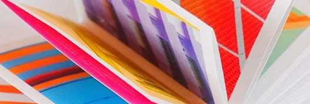
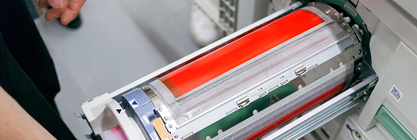
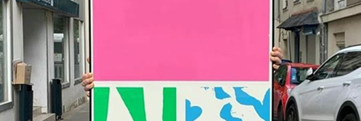

Шаблоны в InDesign

1. Одностраничный зин
1.3 Как зины помогают бренду


2. Многостраничный зин
3.2 Создание макета зина
Чек-листы
3. Создание зина
4 Создание контента для зина

4. Печать и склейка
5.2 Печать и упаковка зина

5. Продвижение
6 Продвижение через зины

6. Монетизация
7 Монетизация через зины
Рабочая тетрадь
7. Тетрадь-зин
2.2 Создание нарратива